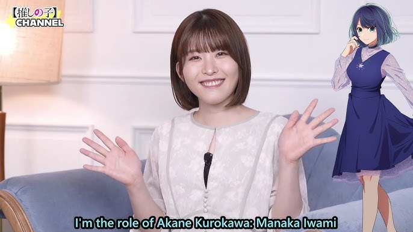
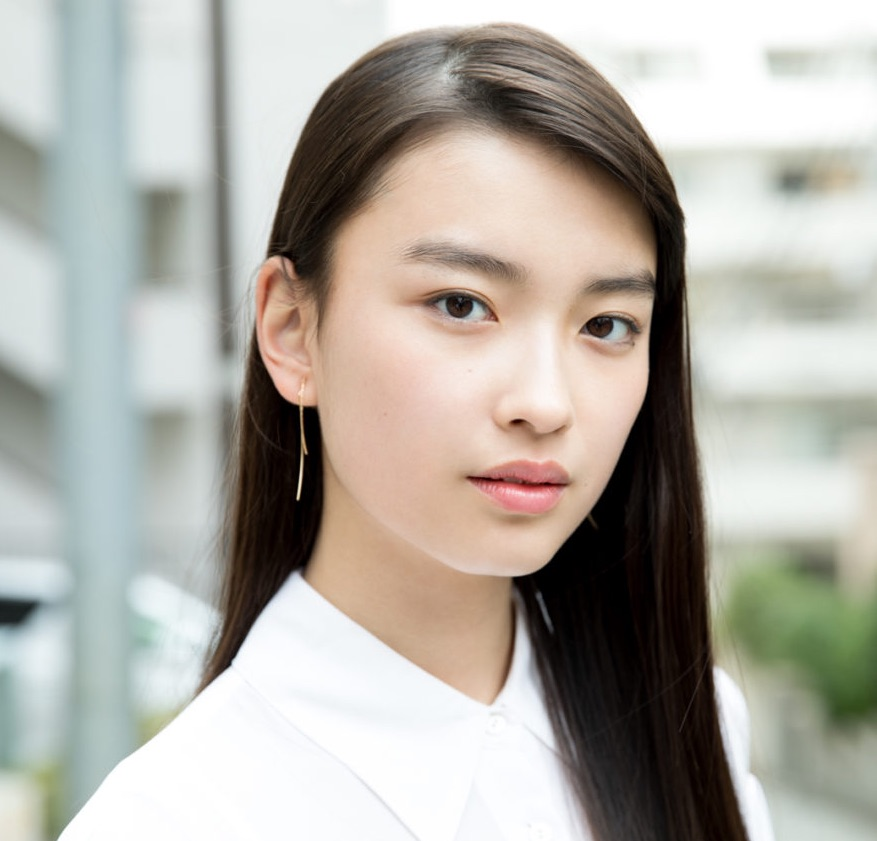
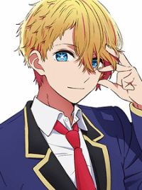
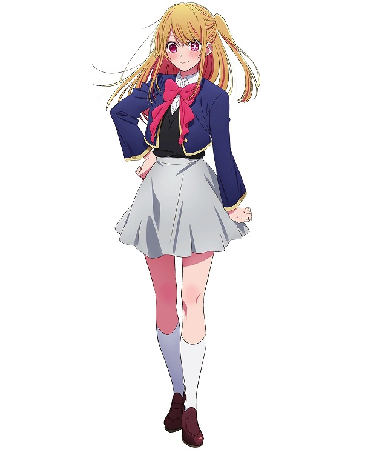
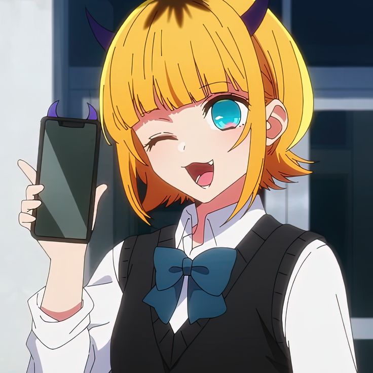
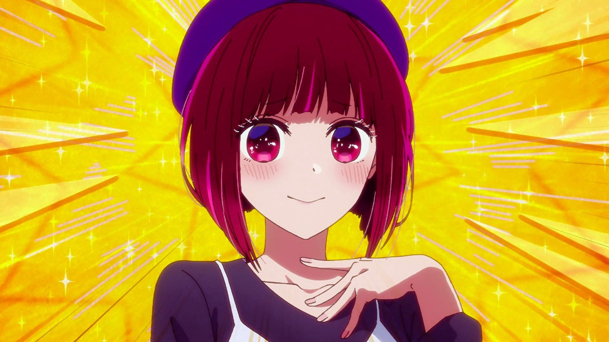

Welcome to Akane Kurokawa's page
Thank you for coming to my page! Hi, I am Akane Kurokawa. I am one of the main protagonists in Oshi No Ko manga/anime/live action
Portrayals
In Anime, I have been voiced by Japanese seiyuu Iwami Manaka

In live action version, I am played by Mizuki Kayashima

Akane's Awesome Friends
|     |
Akane's Hobbies
-
ActingAkane is a really good actress and she is very passionate in acting
-
CookingAkane is a skilled cook who can prepare full-course meals
Even more facts about Akane Kurokawa
| Details | Aspects |
|---|---|
| Name | 黒くろ川かわ茜 |
| Age | 19 |
| Occupation | Actress at LaLa Lai |
| Relationships |
Akane's Favorite Links
- Learn more about Oshi No Ko
- Learn even more about Oshi No Ko Fandom
- I love cooking! Recipes, recipes, and recipes!
- I do play some PS5 games